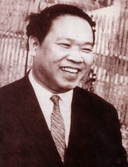

Cù Huy Cận sinh ngày 31 Mai 1919. Quê quán: làng Ân phú, huyện Hương sơn (Hà tĩnh). Học: lớp năm ở trường tổng, lớp tư đến khi đậu tú tài tây ở Huế. Hiện học trường Cao đẳng Nông lâm.

Hồi 1936, có viết giúp Tràng an, Sông Hương (ký Hán quỳ). Từ 1938, đăng thơ ở Ngày nay.
Đã xuất bản: Lửa Thiêng (Đời nay, Hà-nội, 1940).
Đã có hồi người ta tưởng muốn làm thơ hay phải là người hay khóc và thi nhân mỗi lần cầm bút là một lần phải ‘‘nâng khăn lau mắt lệ’’. Nhưng buồn mãi cũng chán. Trên tao đàn Việt nam bỗng phe phẫy một ngọn gió yêu đời, tuy không thổi tan những đám mây sầu u ám, song cũng đã mấy lần ngân lên những tiếng reo vui. Người thính tai sẽ nhận thấy trong những tiếng kia còn biết bao nhiêu vui gượng, nhưng dầu sao sự cố gắng đau đớn của cả một lớp người đi tìm vui, cái cảnh ấy ai thấy mà chẳng động lòng? Than ôi! ngày vui ngắn ngủi, chưa được mấy năm nỗi buồn đã trở về, thảm đạm và nặng nề hơn xưa.
Nó đã trở về trong tập ‘‘Lửa Thiêng’’. Với những tính cách khác hẳn. Cái buồn ‘‘Lửa Thiêng’’ là cái buồn tỏa ra từ đáy hồn một người cơ hồ không biết đến ngoại cảnh. Có người muốn làm thơ phải tìm những cảnh nên thơ. Huy Cận không thế. Nguồn thơ đã sẵn trong lòng, đời thi nhân không cần có nhiều chuyện. Huy Cận có lẽ đã sống một cuộc đời rất bình thường, nhưng người luôn luôn lắng nghe mình sống để ghi lấy cái nhịp nhàng lặng lẽ của thế giới bên trong. Ai đã so sánh Las Mocedades del Cid của Guillen de Castro với le Cid của Corneille hay Kim Vân Kiều truyện của Thanh tâm tài nhân với Đoạn trường tân thanh của Nguyễn Du đều nhận thấy trong Đoạn trường tân thanh và trong le Cid nhiều tình mà ít chuyện. Nếu ta so sánh thơ Huy Cận với thơ hồi trước, ta cũng sẽ thấy như thế.
Huy-Cận đi lượm lặt những chút buồn rơi rác để rồi sáng tạo nên những vần thơ ảo não. Người đời sẽ ngạc nhiên vì không ngờ với một ít cát bụi tầm thường thi nhân lại có thể đúc thành bao nhiêu châu ngọc. Ai có ngờ những bước chân đã tan trên đường kia còn ghi lại trong văn thơ những dấu tích hẳn không bao giờ tan được?
Thôi đã tan rồi vạn gót hương
Của người đẹp tới tự trăm phương.
Tan rồi những bước không hò hẹn
Đã bước trùng nhau một ngả đường.
Lại có khi suối buồn thương cứ tự trong thâm tâm chảy ra lai láng không vướng chút bụi trần:
Ôi! nắng vàng sao mà nhớ nhung!
Có ai đàn lẻ để tơ chùng?
Có ai tiễn biệt nơi xa ấy
Xui bước chân đây cũng ngại ngùng....
Phải tinh lắm mới thấy rõ lòng mình như thế giữa cái ồ ạt, cái rộn rịp của cuộc đời hằng ngày. Đây có lẽ là một điều Huy Cận đã học được trong thơ Pháp. Nhưng với trí quan sát rèn luyện trong nền học mới, Huy-Cận đã làm một việc táo-bạo: tìm về những cảnh xưa, nơi bao nhiêu người đã sa lầy - tôi muốn nói sa vào khuôn sáo. Người nói cùng ta nỗi buồn nơi quán chật đèo cao, nỗi buồn của sông dài trời rộng, nỗi buồn của người lữ thứ dừng ngựa trên non, buồn đêm mưa, buồn nhớ bạn. Và cũng như người đã làm thơ với những cái hình như không có gì nên thơ, người tìm ra thơ trong những chốn ta tưởng không còn có thơ nữa. Người đã gọi dậy cái hồn buồn của Đông Á, người đã khơi lại cái mạch sầu mấy nghìn năm vẫn ngấm ngầm trong cõi đất này. Huy-Cận triền miên trong cảnh xưa, trò chuyện với người xưa, luôn luôn đi về trên con đường thời gian vô tận. Có lúc hình như thi nhân không phân biệt mộng với thực, ngày trước với ngày nay. Cảnh trước mắt người mơ màng như đã thấy ở một kiếp nào; tình mới nhóm người tưởng chừng đã hẹn đâu ‘‘từ vạn-kỷ’’.
Nhưng con đường về quá khứ đi càng xa, càng cô tịch; tư bề càng vắng lặng, mênh mông. Có lẽ thi nhân trong cuộc viễn du đã có lần nhác thấy cái xa thẳm của thời gian và không gian, có lẽ người đã nghe trong hồn hơi gió lạnh bốt từ vô cùng đưa đến. Một Pascal hay một Hugo trong lúc đó sẽ rùng mình, sẽ hốt hoảng. Với cái điềm đạm của người phương Đông thời trước, Huy-Cận chỉ lặng-lẽ buồn:
Một chiếc linh hồn nhỏ:
Mang mang thiên cổ sầu.
Tôi nhớ lại cái buồn của một thi nhân khác, Trần tử Ngang, ngàn năm trước, cũng đã có một cuộc viễn du tương tự như thế:
Ai người trước đã qua?
Ai người sau chưa đẻ?
Nghĩ trời đất vô cùng,
Một mình tuôn giọt lệ.[1]
Tuy nhiên điềm đạm đến đâu người ta cũng không thể một mình đứng trước vô cùng. Người ta cần phải nương tựa vào một cái gì cho đỡ lẻ loi: một lòng tin, hay ít nữa, một tình yêu, theo nghĩa thông thường và chân chính của chữ yêu. Huy Cận có lẽ đã thiếu tình yêu, mà Thượng đế của người lại chỉ là một cái bóng, để gửi ít câu thơ thì được, để an ủi thì không. Cho nên người thấy mình lạc loài giữa cái mênh mông của đất trời cái xa vắng của thời gian. Lời thơ vì thế buồn rười rượi. Nhưng thương nhất là những đoạn thơ vui (chẳng hạn bài ‘‘Tình tự’’). Ta thấy một người hiền lành lắm và non dại lắm, vui hấp tấp, vui cuống quýt, vì trong lúc vui người cũng biết buồn đương chờ mình đâu đó.
Nhưng thương hay mến có làm gì. Thương mến không đủ làm tan nỗi bơ vơ. Khoảng trống trong lòng thi nhân họa tình yêu mới lấp được muôn một.
Có người sẽ bảo thơ Huy Cận già. Già vì buồn, già vì hay kể lể những chuyện xa, những chuyện xưa. Nhưng trong đời người ta còn có tuổi nào hay buồn hơn tuổi hai mươi [2]. Còn có tuổi nào hay vẩn vơ hơn. Tôi thấy thơ Huy Cận trẻ lắm. Huy Cận đã đưa tôi về khoảng đời tôi bảy tám năm trước. Tôi bùi ngùi thương chàng niên thiếu hồi bấy giờ đã sống luôn mấy năm trong hiu quạnh. Chàng cũng mang một tấm lòng chứa chan yêu dấu đi tìm tình yêu trong tình bạn. Và vì thế chàng cũng đã đi lầm đường. Chàng thấy cảnh trời đẹp, chàng gặp những tâm hồn cao quý, chàng được vô số mến thương. Nhưng đẹp làm gì, cao quý làm gì, thương mến làm gì, nếu lòng chàng không hề đón được tí hương ân ái. Vũ trụ bao la quá, lòng chàng giá lạnh quá, chàng muốn quên mình, quên hết thảy trong tình yêu của một người, vô luận người nào. Chàng gõ cửa hết nơi nọ chốn này song bao nhiêu tâm tư đều đóng kín.
Nỗi lòng xưa, nay sực tỉnh. Đọc thơ Huy Cận, tôi đã gặp lại một người em.
Chỉ một người em? Không. Năm tháng dầu đi qua, đời tôi dầu có khác, nhưng tuổi hai mươi đã thực chết trong lòng tôi?
Mars 1941
Buồn đêm mưa
Đêm mưa làm nhớ không gian,
Lòng run thêm lạnh nỗi hàn bao la....
Tai nương nước giọt mái nhà
Nghe trời nặng nặng, nghe ta buồn buồn.
Nghe đi rời rạc trong hồn
Những chân xa vắng dặm mòn lẻ loi....
Rơi rơi... dìu dịu rơi rơi....
Trăm muôn giọt nhẹ nối lời vu vơ....
Tương tư hướng lạc, phương mờ....
Trở nghiêng gối mộng, hững hờ nằm nghe.
Gió về, lòng rộng không che,
Hơi may hiu hắt bốn bề tâm tư....
(Lửa Thiêng)
Tình - tự
Sáng hôm nay hồn em như tủ áo,
Ý trong veo là lượt xếp từng đôi.
Ao đẹp chưa anh! Hoa thắm thêu đời,
Áo mơ ước anh bận giùm chiếc nhé.
Và rạng cùng xanh, hồng cười với tía,
Xin mời anh chọn hình sắc yêu đương.
Hồn em đây đủ muôn ánh nghê thường,
Anh hãy bận hồn em màu sáng chói.
Anh có biết, hôm nay là ngày hội
Của lòng ta. Em trần thiết, trang hoàng.
Anh đã về; em nghe dưới chân vang
Hoa lá nở với chuông rền giọng thắm.
Thủa chờ đợi, ôi, thời gian rét lắm,
Đời tan rơi cùng sao rụng canh thâu ;
Và trăng lu xế nửa mái tình sâu,
Gió than thở biết mấy lời van-vỉ?
Lòng em nhớ lòng anh từ vạn kỷ,
Gặp hôm nay nhưng hẹn đã ngàn xưa.
Yêu giữa đời mà hồn ở trong mơ,
Tình rộng quá, đời không biên giới nữa.
Đây cửa mộng lòng em, anh hãy mở ;
Màu thanh-thiên rời rơi, gió long lanh:
Hồn nhớ thương em dệt áo dâng anh.
(Lửa Thiêng)
Đi giữa đường thơm
Đường trong làng: hoa dại với mùi rơm....
Người cùng tôi đi dạo giữa đường thơm,
Lòng giắt sẵn ít hương hoa tưởng tượng.
Đất thêu nắng, bóng tre rồi bóng phượng
Lần lượt buông màn nhẹ vướng chân lâu:
Lên bề cao hay đi xuống bề sâu?
Không biết nữa – có chút gì làm ngợp
Trong không khí… hương với màu hòa hợp…
Một buổi trưa không biết ở thời nào
Như buổi trưa nhè nhẹ trong ca dao
Có cu gáy, có bướm vàng nữa chứ
Mà đôi lứa đứng bên vườn tình tự
Buổi trưa này xưa kia ta đã đi
Phải cùng chăng? Lòng nhớ rõ làm chi!
Chân bên chân, hồn bên hồn, yên lặng.
Người cùng tôi đi giữa đường rải nắng
Trí vô tư cho da thở hương tình.
Người khẽ nắm tay, tôi khẽ nghiêng mình
Như sắp nói, nhưng mà không: – Khóm trúc
Vừa động lá, ta nhận vào một lúc
Cả không gian hồn… rất thơm tho;
Gió hương đưa mùi, dìu dịu phất phơ…
Trong cảnh lặng, vẫn đưa mùi gió thoảng…
Trí bâng quơ nghĩ thoáng nhưng buồn nhiều:
“Chân hết đường thì lòng cũng hết yêu”
Chân đang bước bỗng e dè đứng lại…
- Ở giữa đường làng, mùi rơm, hoa dại …
(Lửa Thiêng)
Chú thích:
Tiền bất kiến cố nhân
Hậu bất kiến lai giả
Niệm thiên địa chi du du
Độc thương nhiên nhi lệ hạ.
2. Tuổi hai mươi, không phải hai mươi tuổi.